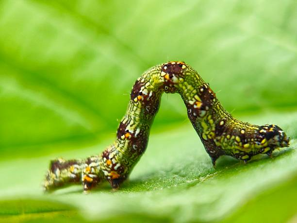

This stunning photograph captures a Crimson Rose Butterfly gracefully feeding on a delicate pink flower. Known for its elegant black wings and vibrant red body markings, this butterfly is one of the most striking species found in tropical forests and gardens.

Ticks are tiny arachnids commonly found in forests, grasslands, and wildlife habitats. Despite their small size, they play an important role in natural ecosystems and are often seen resting on leaves while waiting for a host animal to pass by

The beautiful insect in this photograph is a Luna Moth, known for its delicate green wings and long, graceful tails. Its vibrant color helps it blend naturally with leaves and forest surroundings, making it one of nature's most elegant nocturnal insects

This fascinating photograph showcases a Huntsman Spider, a large and agile spider commonly found in forests, rocky areas, and tree bark habitats. Known for its long legs and impressive speed, the Huntsman Spider is a skilled predator that helps maintain ecological balance by feeding on insects and other small invertebrates

This close-up photograph features a Grasshopper resting gently on a green leaf. Known for their powerful hind legs and remarkable jumping ability, grasshoppers are among the most common and fascinating insects found in grasslands, forests, and gardens.

This captivating macro photograph showcases a Red Click Beetle resting on the edge of a green leaf. Its vibrant reddish-brown body and smooth, elongated shape stand out beautifully against the soft natural background, highlighting the remarkable details often hidden in the insect world.

This fascinating macro photograph features a Crab Spider, a unique spider known for its crab-like appearance and sideways walking ability. Unlike web-building spiders, crab spiders are ambush predators that patiently wait on plants, flowers, or branches before quickly capturing unsuspecting prey..

This unique macro photograph showcases a Treehopper, a small yet fascinating insect recognized for its unusual helmet-like extension on the back. Found on shrubs, trees, and forest vegetation, treehoppers are among nature's most creatively designed insects, often resembling thorns or plant structures for protection

This striking macro photograph features a Planthopper, a small sap-feeding insect commonly found on leaves, stems, and tree bark in forests and grasslands. With its delicate translucent wings and compact body, the planthopper demonstrates the incredible diversity and elegance of the insect world.

This beautiful photograph features a Tree Frog resting quietly on a rocky surface. Known for their excellent climbing abilities and remarkable camouflage, tree frogs are commonly found in forests, wetlands, and tropical habitats. Their smooth skin, strong limbs, and adhesive toe pads allow them to move effortlessly through vegetation and natural landscapes

This striking macro photograph features a Spiny Caterpillar, the larval stage of a butterfly or moth. Covered with colorful spines and intricate patterns, this tiny creature showcases nature's remarkable designs and survival adaptations. The spines help deter predators, while its vibrant appearance serves as a warning in the wild

This captivating macro photograph features a Geometer Caterpillar, commonly known as an Inchworm. Recognized by its unique looping movement, this caterpillar arches its body while moving, creating the appearance of measuring the ground inch by inch

This impressive macro photograph showcases a Black Forest Ant moving across a moss-covered surface. Ants are among the most successful and organized insects on Earth, living in highly structured colonies where each member plays a specific role in the survival of the community.

This vibrant macro photograph showcases a Leaf Beetle, a small but beautifully colored insect resting on a green leaf. Its metallic green wing covers and bright orange head create a striking contrast, making it one of the most eye-catching insects found in forests, grasslands, and garden habitats.

This elegant macro photograph features a Damselfly, a delicate flying insect often found near wetlands, streams, ponds, and forest habitats. Closely related to dragonflies, damselflies are known for their slender bodies, graceful flight, and ability to rest with their wings folded neatly along their body